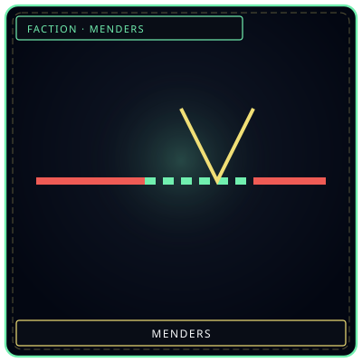
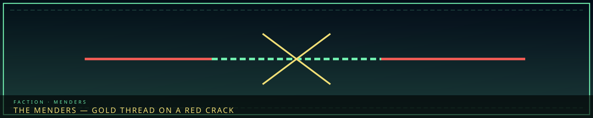
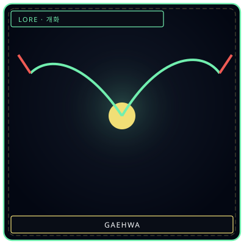

StitchGold on red
/// RAPID JUMP:
STATUS: ARCHIVE VERIFIED |
CLEARANCE: LEVEL-4 OVERSIGHT |
PROTOCOL: REVERIE DIRECTORATE
ARTICLE
DISCUSSION
SOURCE
HISTORY
YEAR 4,238 · DAWN OF HOPE
INDEPENDENT · RAW · 수선자
The Menders
“They do not hide the crack. They stitch it until it holds.”


GaehwaBloom they tendOverview
Menders (수선자 — Suseonja; also 땜장이 — Ttemjangii in the relations matrix) are independent operators, not a Council Head and not a seventh Resonance. They work the Raw — where Wardens will not go, where the R.D. does not reach, where Collectors are too slow. They fix, contain, protect, mediate. They report to both the Architects and the Directorate. That split loyalty is named in source.
Why they exist: Wardens protect the Veil, not the Raw. The R.D. contains Sorrow Entities, not everyday cracks. Collectors enforce debt, they do not help. Architects build, they do not repair. Menders fill the gaps.
Services
| Service | What it is | Payment |
|---|---|---|
| Repair | Fix damaged buildings, reinforce Han structures | Echoes |
| Containment | Minor Sorrow Entities the R.D. will not schedule | Echoes + entity rights |
| Mediation | Disputes between citizens, factions, districts | Echoes or favors |
| Protection | Guard people or rooms in the Raw | Echoes |
| Retrieval | Lost people, stolen items, missing memories | Echoes + information |
| Fracture response | Arrive before the Wardens | Echoes + risk |
| Escort | Through the Raw or the Desolate | Echoes |
Ranks and Marks
Ranks run 7 (Novice — basic Han sensing, small shops) through 6 Journeyman, 5 Adept, 4 Veteran (R.D. contracts), 3 Expert (Council / R.D.), 2 Master (M.A.W. proficiency), 1 Grandmaster (near-Architect, only the most dangerous contracts).
Above Rank 1 are the Marks — legendary names, a handful in the city’s history. A Mark is not a rank; it is a scar the city still uses as a name. Novices who chase a Mark instead of a crack do not last the Raw.
| Mark | Status | Legend |
|---|---|---|
| Grey Veil | Active | Can suppress an entire district’s sorrow. No one has seen their face. |
| Crimson Thread | Deceased | Died containing a Sovereign-class entity. Their M.A.W. is still active — bonded to no one. |
| Pale Witness | Missing | Entered the Dream and never returned. Some say they found the Before-Time. |
| Black Tide | Active | Works only in the Desolate. Knows Outside Sorrow the R.D. does not. |
| Golden Echo | Active | Trades memories not for profit but for redemption — returns lost recollection. |
Loose organizations, not a Council guild: the Mendery (Zone D contract hall, all grades, neutral ground), Raw Collective (refuse the Veil on principle), Threshold Walkers (Desolate escorts — they know it better than anyone), Veil Watchers (monitor Veil integrity, report to no one — and feed Giltong when a Taboo signature shows on a repair).
Kit and rod
Mender’s Kit (수선자 도구함 — Suseonja Doguhan): leather-and-crystal case — trowels, probes, gauges, sealant, Echo reserves, a small Sorrow Gauge. Tools answer the user’s feeling. Each kit personalizes until it is as distinct as a fingerprint.
Repair Rod (수리 막대 — Suri Makdae): flexible Han-crystal, warm. Vibrates at cracks, fills them with the Mender’s own sorrow, reinforces weak spans, can be a weapon in an emergency. It remembers every repair. A veteran can walk the city by the rod’s map of failures. If the rod starts pulling toward the Desolate instead of a crack, stop. That is not a repair. That is a boundary (Taboo 6 adjacent).
Place
Alliance with the R.D. is field operations — unofficial contractors. Alliance with Architects is the same people on construction sites. Frays sometimes hire Menders, sometimes oppose them. Citizens pay Echoes for repair. Giltong treat them as witnesses, not hunters. Seol, in the Cast, is the youngest Mender who still repairs the Veil — a person page, not this guild.
They do not sit in the seven-note Resonance table. Shaping is Architects; Barrier is Wardens. Menders borrow both at street scale and pay in their own sorrow poured into other people’s walls. In the domain table: the Raw is Fray-local, challenged by individual Menders and by Wardens when they enter; debt is Collectors, challenged by Brokers, Debtless, and Menders. See faction technology and the Raw.